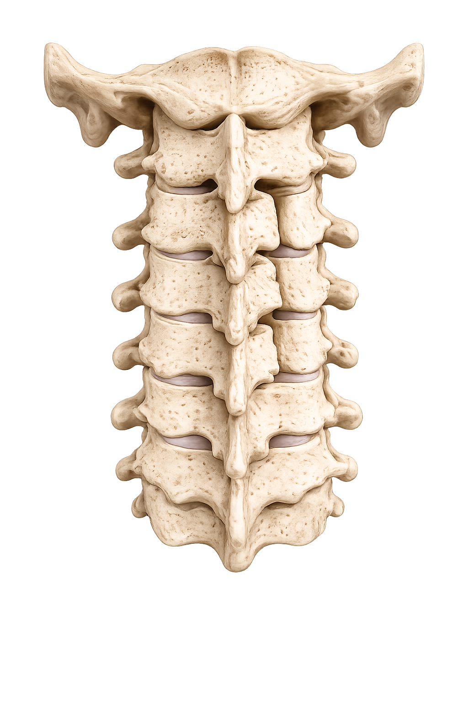

Cervical Laminoplasty
A reconstructive surgical procedure that widens the spinal canal by moving the posterior bone arch (lamina) without removing it. Used for multi-level central spinal stenosis and cervical myelopathy, this technique preserves motion while expanding space for the spinal cord.

What is Cervical Laminoplasty?
Cervical laminoplasty is an extensive reconstruction procedure that expands the spinal canal to relieve pressure on the spinal cord caused by multi-level stenosis or cervical myelopathy.
The Concept
Rather than removing the lamina (bony arch covering the canal) or fusing vertebrae, laminoplasty reshapes and repositions the lamina like "opening a door" to widen the canal. This preserves motion while providing decompression across multiple levels.
When Indicated
- Multi-level cervical stenosis (typically 3+ levels)
- Cervical myelopathy (spinal cord compression symptoms)
- Diffuse central canal narrowing
- Failed conservative treatment with progressive neurological deficit
- Desire to preserve motion across multiple levels
Patient Considerations
- Acceptable surgical candidate with good bone quality
- No severe instability (instability may require fusion)
- Imaging clearly shows multi-level compression
- Commitment to post-operative rehabilitation
Surgical Approach & Anatomy
Laminoplasty is performed from the back of the neck with careful attention to the bone and ligamentous structures that support the canal.
The Posterior Approach
Your surgeon accesses the spine from the back of the neck, exposing the laminae (plural of lamina) across multiple levels and reshaping them to expand the central canal without disturbing the anterior structures.
Key Anatomical Features
- Incision location — midline incision on the back of the neck, typically extending from C3 through C7
- Bilateral exposure — both sides of the lamina and facet joints are exposed widely
- Lamina architecture — the bony arch that forms the posterior border of the spinal canal
- Spinal cord — lies immediately anterior to the lamina and must be protected throughout
The Surgical Procedure
Laminoplasty involves careful bone work on both sides to expand the canal while maintaining spinal stability through preserved bone and specialized fixation.
-
Midline posterior exposure
A midline incision is made on the back of the neck. The paraspinal muscles are reflected bilaterally to expose the laminae and facet joints across the multiple affected levels, typically from C3 through C7.
-
Open-side laminotomy
On one side (designated the "open side"), a complete cut (osteotomy) is made through the lamina from top to bottom. This side will swing outward like a door to expand the canal.
-
Hinge-side greenstick fracture
On the opposite side (the "hinge side"), a controlled partial cut is made through the outer bone only, creating a flexible "greenstick" fracture. This acts as a living hinge, allowing the other side to open without complete separation.
-
Canal expansion
The open side is gently swung outward, expanding the spinal canal cross-section. The spinal cord shifts posteriorly (backward) away from anterior compressive elements, relieving pressure.
-
Plate fixation
Specialized titanium mini-plates are screwed into the open-side lamina to hold it permanently in its new open position. This maintains the expanded canal and provides long-term stability.
Benefits of Laminoplasty
This approach offers distinct advantages for multi-level stenosis and cervical myelopathy.
Structural Benefits
- Expands canal across multiple levels in one procedure
- Preserves all motion segments
- Avoids anterior disc removal and fusion
- Uses the patient's own bone for expansion
Recovery & Long-term
- Myelopathy symptoms may improve significantly
- Maintains functional neck motion long-term
- Reduced risk of adjacent-level disease vs. fusion
- Permanent stabilization with plates
Ideal for extensive stenosis. When multiple levels are compressed and motion preservation is a goal, laminoplasty provides excellent decompression without the limitations of fusion across many levels.
Common Questions
Questions patients often ask about cervical laminoplasty.
How is laminoplasty different from laminectomy?+
Laminectomy removes the entire lamina completely. Laminoplasty reshapes and repositions it without removing it, creating a living hinge. Laminoplasty offers better long-term stability and reduced risk of late deformity, making it preferred for most patients.
Will my neck motion be affected?+
One of the main benefits of laminoplasty is motion preservation. Your neck should retain functional flexibility. Some patients notice subtle changes in motion after surgery, but most report excellent functional outcomes without significant restriction.
How long is recovery from laminoplasty?+
Initial healing takes 6–8 weeks. Gradual return to desk work may begin within 4–6 weeks. Progressive strengthening and physiotherapy continue over 3–6 months. Full recovery and return to strenuous activity typically occurs by 3–6 months.
What is the success rate for myelopathy relief?+
Studies show that 70–90% of patients experience improvement in myelopathy symptoms (weakness, clumsiness, gait disturbance). Complete reversal of symptoms depends on severity and duration of compression before surgery. Early intervention offers better chances of symptom improvement.
Are there risks specific to laminoplasty?+
As with any surgery, there are small risks of bleeding, infection, and temporary neurological changes. The plate fixation generally remains stable. Rare complications include lamina closure (hinge failure), but this is uncommon with modern techniques.
Questions about your condition?
Discuss with your surgeon whether laminoplasty is appropriate for your multi-level stenosis.